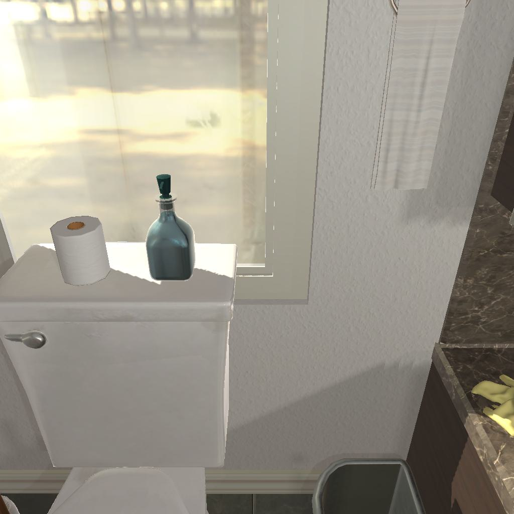

---------------------------------------------------------task: 27---------------------------------------------------------
--------------------------------------------------------------------------------------------------------------------------------------------------------------------
--------------------------------------------------------------------------------------------------------------------------------------------------------------------
Step:--------------------------------------------------------------------------2-------------------------------------------------------------------------------
----------------------------------------
VLM Prompt:
Image1:
**Instruction**
1. Analyze the provided image to identify all visible household objects, focusing on those relevant to the task description "find two soapbottle and put them in garbagecan."
2. Use the analysis of the image and the task hint "The agent must find an object of the desired type, pick it up, find the correct location to place it, put it down there, then look for another object of the desired type, pick it up, return to previous location, and put it down there with the other object." to answer the question: what is the most reasonable action in the choices for the task description "find two soapbottle and put them in garbagecan"?
4. Decide and write the answer using the template: The answer is: (i): , where i is the real number. If there is no desired object in the image, search every place based on **Initial Observation** to find the object. And if no one is exactly correct, choose a similar answer.
**Initial Observation**
You are in the middle of a room. Looking quickly around you, you can see countertop (1), sinkbasin (1-2), sink (1-2), garbagecan (1), drawer (1-2), toilet (1), handtowelholder (1)
**Answer Choices**
(1): go to countertop 1
(2): go to sinkbasin 1
(3): go to sink 1
(4): go to garbagecan 1
(5): go to drawer 1
(6): go to drawer 2
(7): go to sink 2
(8): go to sinkbasin 2
(9): go to handtowelholder 1
(10): take handtowel 1 from toilet 1
(11): take soapbottle 1 from toilet 1
(12): take toiletpaper 1 from toilet 1
(13): take cloth 1 from toilet 1
(14): take scrubbrush 1 from toilet 1
(15): take plunger 1 from toilet 1
(16): examine toilet 1
**Answer**
Let's think step by step by following the instructions.
----------------------------------------
----------------------------------------
Original Response:
The task description mentions finding two soap bottles and putting them in the garbage can. In the image provided, there is a blue soap bottle on top of the toilet. This is the first object relevant to the task description.
Based on the initial observation, the garbage can is also mentioned as an object in the room.
The most reasonable action to start the task would be to go to the toilet where the visible soap bottle is and pick it up. Therefore, the correct action from the choices provided is:
The answer is: (11): take soapbottle 1 from toilet 1
After this, the agent would need to put it in the garbage can and then search for the second soap bottle following the initial observation hints.
----------------------------------------
----------------------------------------
>>> Refine Original VLM Response and Get Pure Action: take soapbottle 1 from toilet 1
After this, the agent would need to put it in the garbage can and then search for the second soap bottle following the initial observation hints
----------------------------------------
-----------------------------------------------------------------
Running time: 28.190998792648315 seconds
Total Money: 9.59092
-----------------------------------------------------------------
-----------------------------------------------------------------
Text Observation:You pick up the soapbottle 1 from the observation hints.
-----------------------------------------------------------------
UNSUCCEED